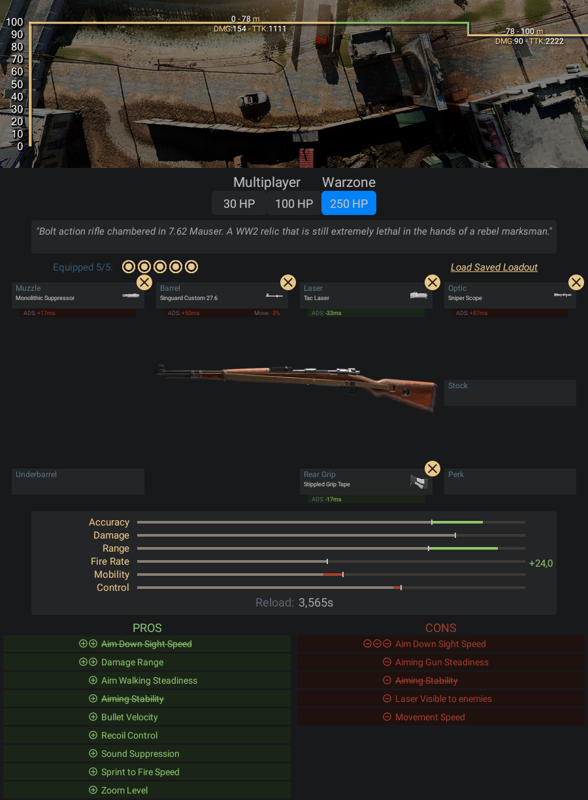

Fuzil de calibre 7,92 Mauser de ação por ferrolho. Uma relíquia da Segunda Guerra
que ainda é extremamente letal nas mãos de atiradores experientes.
- Pontos Positivos:
- -Dentre todas as snipers ela é que mais aponta a mira ligeiro, e para
- o Warzone uma sniper que mira ligeiro é um ponto muito crucial
- Pontos Negativos:
- -Ela tem o pior dano a partir de 78 metros se acertar no corpo para baixo
- -É difícil calcular sua trajetória em grandes distâncias
Informações e dicas de como fazer uma classe da Kar98k:
Acessórios para Kar98k:
- Boca - Surpressor Monolítico
- Cano - Singuard Custom 27.6
- Laser - Laser Tático
- Lente - Mira de Franco-atirador
- Cabo - Fita Aderente Pontilhada